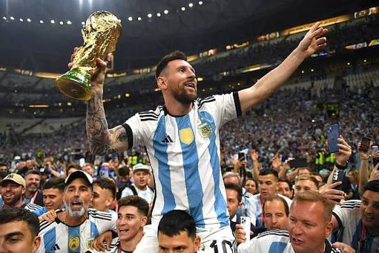
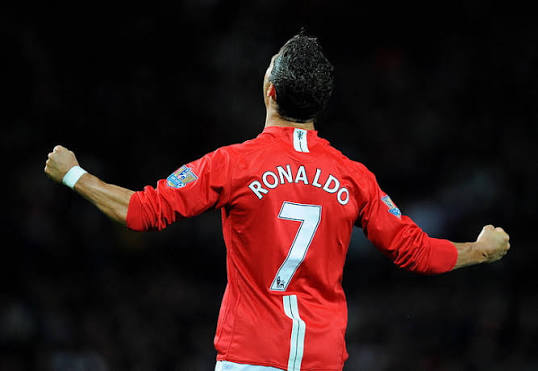

Híres játékosok

Lionel Messi
Argentín labdarúgó, akit sokan minden idők egyik legjobb játékosának tartanak.

Cristiano Ronaldo
Portugál futballista, aki pályafutása során több nagy klubban is játszott.
Kattints ide a klubokhoz!